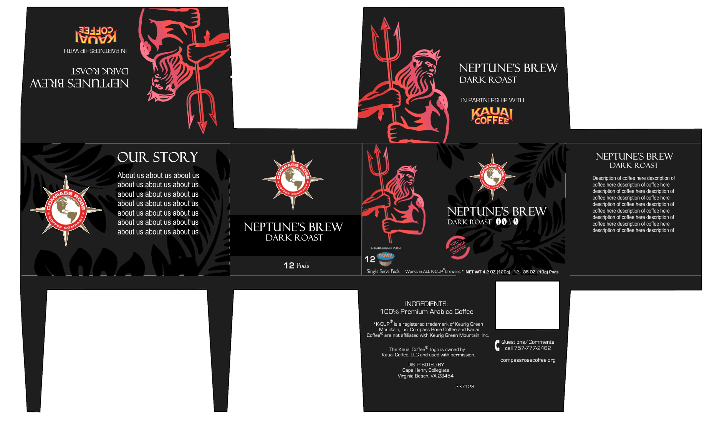
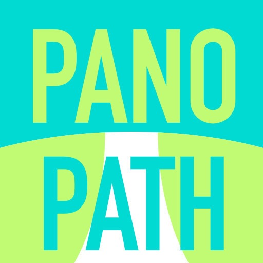
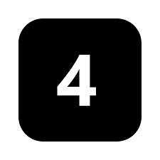
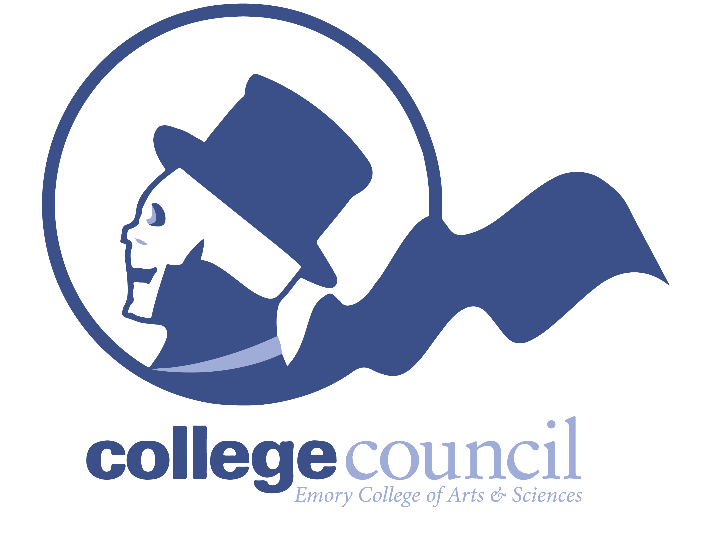
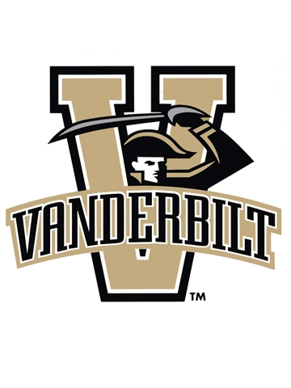

Past Experience


Co-founded by Harry in 2014, Compass Rose Coffee Company is a student-run non-profit organization that finance local students study abroad by selling single serving pods of coffee that are made 100% in the U.S. During his four years at the organization, he led negotiations with Chick-fil-A and Whole Foods executives in both email communications and face-to-face conversations. Under his leadership, the organization generated a total of $8,000 profit through product sales and donations for financing local students to travel and study abroad. The marketing department Harry led from 2016 to 2018, which is composed of 22 members, developed local customer relationships, updated marketing reports, and designed the packaging for the most recent products. The image is an example of the designs.

Harry served as Head of Public Relations at Panopath Educationa and Technology from 2018 to early 2019. He co-organized the 2018 annual PanoFair, a series of events connecting high-school students to student leaders and admission officers from 50+ top U.S. Universities which attracted over 5000 attendees. He also recruited 30+ academic coaches, college tour guides, and SAT/ACT tutors from top U.S. universities. Before heaing the department, Harry served as a project lead for over 1 year. He established internal model to track individual progress resulting in increased departmental coordination. He also trained 100+ student interns about digital marketing, public relations, and sponsorship negotiation.

Currently serving as the Co-Founder and Head of Marketing at the Emory Global China Summit, Harry oversees the administrative and marketing aspects of the South's largest China Summit. In 2018, Harry led a team of five Emory students in the negotiation with the Carter Center. With the joint effort of the team, the EGCS committee convinced President Jimmy Carter, current Chinese Ambassador Tiankai Cui, President Xiaolin Li, Governor Holden, and over 50 other speakers to the 2019 summit through collaboration with the Carter Center and over 20 other national organizations. Harry also composed the event logo, pitch books, brochures, press releases, and social media posts with 4000+ average views.

As a Lead Marketing Strategy Intern at Culturebase, PBC, Harry implemented marketing strategy for the mobile application; analyzed 20+ data sets, researched and benchmarked industrial marketing best practices, identified 5 market segments, and presented recommendations to executives resulting in increased product adoption rate and projected profit.


Currently serving as the Vice President of Communications at the Emory College Council (Student Government), Harry corresponds with over 7,000 on-campus students, over 250 student organization leaders, staff, and faculty and oversees all promotional writings and designs for Culture Shock and Social Justice Week, Emory’s two biggest cultural events.

Harry currently serves as a digital marketing consultant at Vanderbilt Owens School of Management. As a student consultant, Harry led team of 8 students to top 3 finish in three consulting projects; presented findings and actionable recommendations in formal presentations to executives from Starbucks, Asurion, and Hillman Group. During the period, Harry also completed 50+ hours of graduate-level coursework in marketing, strategy, operations, finance, entrepreneurship, ethics, and innovation.

Next chapter...